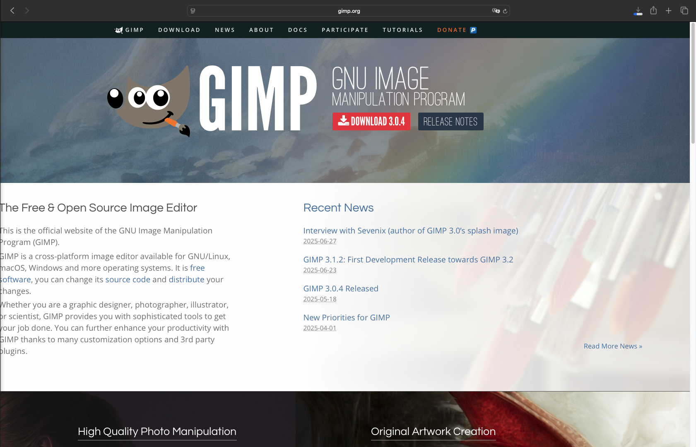
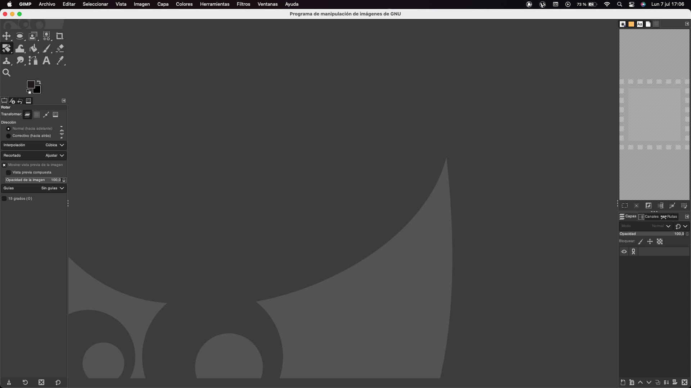
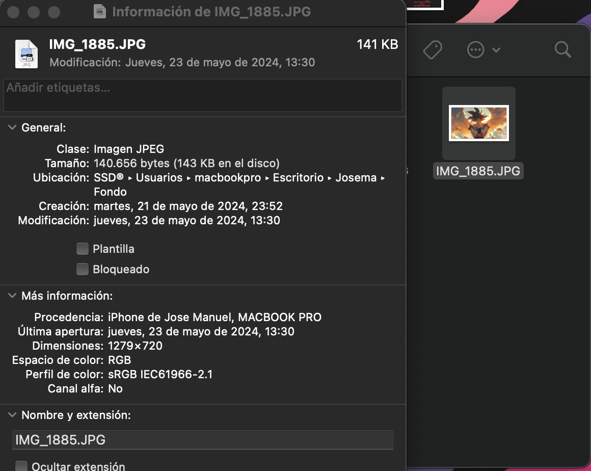

Práctica: Uso de GIMP para edición de imágenes
1. Instalación de GIMP
a. Captura de la web de descarga
Se debe realizar una captura de pantalla de la página oficial: https://www.gimp.org/downloads/

b. Captura de GIMP ejecutándose
Insertar aquí la imagen de la captura:

2. Edición de Imagen
a. Imagen original mayor de 1000px de ancho
Buscar una imagen de paisaje con más de 1000px de ancho.

Insertar aquí la captura donde se vea la resolución:

b. Imagen reducida a 100px de ancho manteniendo proporción
- Abre la imagen en GIMP:
- Archivo → Abrir o arrastra la imagen al lienzo.
- Accede al cambio de tamaño de imagen:
- Ve a Imagen → Escalar imagen...
- Introduce 100 en el campo “Ancho” (Width):
- Asegúrate de que el icono de la cadena (🔗) entre "Ancho" y "Alto" está cerrado.
Esto indica que la relación de aspecto está bloqueada, y el alto se ajustará automáticamente.
- Verifica el nuevo alto (Height) — será proporcional.
- Haz clic en “Escalar” para aplicar los cambios.
- Guarda o exporta la imagen:
- Archivo → Exportar como… (por ejemplo .jpg, .png, etc.)
Insertar aquí la imagen reducida:

c. Cambio de formato a .png
El archivo reducido ha sido guardado en formato PNG con el nombre: imagen-reducida-100px.png
d. Imagen girada 45 grados
- Abre tu imagen en GIMP.
- En la caja de herramientas, selecciona la herramienta de Rotación:
- Menú: Herramientas → Herramientas de transformación → Rotar
- O haz clic en el icono 🔁 (una flecha curvada).
- Haz clic sobre la imagen o capa que quieras rotar.
- Se abrirá una ventana llamada "Rotar".
- En el campo Ángulo, escribe 45 (o -45 si quieres girar en sentido horario o antihorario).
- Haz clic en "Rotar".
Insertar aquí la imagen girada: